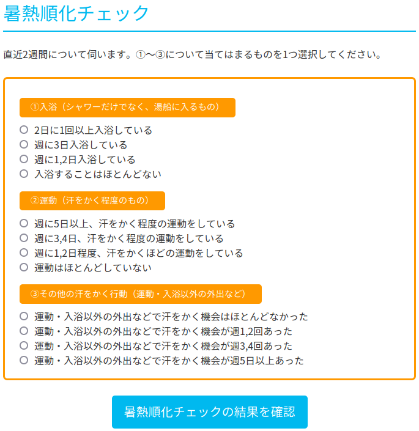

お散歩カメラ 2024-07-13

暑熱順化
無教養な私は「暑熱順化」なる言葉を初めて知ったのだが，知ったきっかけがこれ。
いやぁ，あの装備で階段の上り下りとか腕立て伏せとかないわ（笑） 消防士さんスゲー！
「暑熱順化」については以下のページが参考になるようだ。
このページの下の方に「暑熱順化チェック」ってのがあって

「入浴（シャワーだけでなく、湯船に入るもの）」「運動（汗をかく程度のもの）」「その他の汗をかく行動（運動・入浴以外の外出など）」の3つのうち2つ以上を継続的に行っていれば効果があるらしい。
入浴といえば温泉っスよ。 というわけで，今回も温泉へGo。
スマホのナビゲーションアプリを試す
前回 Garmin 先生のナビがイマイチという話を書いたんだけど，今回は音声ナビゲーションが可能なサービスを2つ試してみた。
OsmAnd
OsmAnd はマップをダウンロードしてオフラインでナビゲーションが可能なサービスおよびアプリ。 Android 版のアプリは以下で取得できる。
地図は7つまでは無料でダウンロードできる。 つっても中国地方まるごとひとつの地図データとしてダウンロードできるので，私の行動範囲で7つ使い切ることはなかろう。
{kind=link}
ルート作成やナビゲーションは無料でできる。 …のだが，何故かやたら裏道を通りたがるのでルート作成はギブアップした。 Garmin Connect で作成したルートを GPX 形式のファイルでエクスポートしたものを OsmAnd にインポートできるので，今回はそれで。
さっそく熊野大社までの道のりを音声案内でナビゲートさせたのだが，すンげぇ分かりにくい。 ただのカーブで左に行けだの右に行けだの行ってくる。 しかも数百メートル手前からアナウンスするので「何言ってるの？」って感じになる。 特に街中の案内がダメダメで，知らない道だと（音声だけでは）確実に迷う。
アナウンスの音が小さい。 スマホの音量を上限近くまで上げないと周囲のノイズに埋もれて聞こえない。 スマホの音量を上げると（音が大きすぎて）音楽が聴けないというのも不便。
Ride with GPS
自転車等のアクティビティの共有と評価を行うサービス。 スマホアプリを使って音声ナビゲーションが可能。
ただし，ルートの保存やナビゲーション機能を使う場合はサブスクリプション契約を行う必要がある。 7日間のお試し期間あり。 今回はお試し期間を利用した。
Ride with GPS のルート作成（ルートプランナー）も微妙に使いにくい。 まぁ OsmAnd よりはだいぶマシだけど。 熊野大社から市内へのルートを Garmin Connect で作成し GPX ファイルにエクスポートしたものを Ride with GPS に読み込ませることで対応した。 やっぱ Garmin Connect のルート作成機能が一番使いやすいな（個人の感想です）。
で，実際に音声案内でナビゲートさせたのだが，これが OsmAnd より分かりにくい。 音声で「たんれふと」とか「たんらいと」とか言ってて，最初はなに言ってるか分からなかった。 あぁ “turn left” “turn right” のことか。 英語不得手だと苦労する。 しかもアナウンスで「たんれふと，それからひだりにまがる」とか言うのよ。 2回曲がるのかと思ったよ。
↑のアナウンスが分岐ポイントの数百メートル手前で鳴るのだが，実際にルートの分岐点に到達しても何のアナウンスもなくただジングルが鳴るだけ。 しゃべってくれ！ 何のジングルか分からんじゃろ。
OsmAnd と同じで，ただのカーブで左に曲がれとか右に曲がれとか言ってくさる。 そうかと思うと「道なりに行け」と言ってしばらくだんまりだったり。 アナウンスの基準が分からん。 丁字路やY字路でのアナウンスも不親切だし。
Ride with GPS もアナウンスの音が小さい。 スマホの音量を上限近くまで上げないと周囲のノイズに埋もれて聞こえない。 しかも通知音を有効にしないとそもそも音声アナウンスが鳴らない。 スマホの通知音を有効にすると要らんジングルまで鳴り始めるので鬱陶しい。
ぶっちゃけ，お金払ってこの品質なら要らん（アクティビティの共有と評価なら Strava のほうがよく出来ている）。 というわけでサブスクリプション契約は速攻で解除した（お試し期間中は有効みたい）。
スマホアプリのナビゲーションは地図が見れてナンボ？
OsmAnd も Ride with GPS も音声アナウンスのみでナビゲートさせるのは無理があることが分かった。 強いてどっちか選ぶとするなら OsmAnd のほうかな。
そう考えると trimm ROLLIN のナビゲーション機能はホンマによく出来てる。 つくづくアプリがぶっ壊れた件は惜しい。 もしアプリが復帰したらサイコン同時使用とかできないだろうか。
スマホを自転車に取り付けるのは抵抗があるんだよな。 でも，もし買うなら Peak Design のアダプタとマウントかな。
八雲温泉で暑熱順化だ（笑）
気を取り直してお散歩カメラを始めよう。 まずはいつものように八雲温泉へ。
あれに見えるは白いモビルスーツ案山子か。
案山子なんて久しぶりに見たな。
八雲温泉に到着して，まずはサッパリ。
木次乳業さん，いつもお世話になっています。 日焼け止めは塗り直さないと。
お昼は何にしようかとメニューを見たら夏限定の盛岡冷麺ってのがあった。 さっそく注文する。
スープが旨辛で美味しかった。 もっとも私は本場の盛岡冷麺を知らんので，この味で正解なのかは分からない（笑）
腹ごなしというわけではないが，久しぶりに熊野大社にも詣でておくか。
最近，ちょっとずつ筋力が付いてきたせいか，うっかりスピードを出し過ぎることがあるんだよね。 田んぼの真ん中の見通しのいい道ならともかく，街中でスピードを出すのは危ない。 実際に最近ヒヤリとしたことがあるし。 というわけで，熊野大社では交通安全を誓ってみた。 街中ではギアを落として（ケイデンスは落とさない）安全運転。
定点観測
さて腹もこなれたし，市内へとって返そう。 いつもの定点観測。
今日は基本的に曇りで大山も見れなかったんだけど，ときどき日が差すんだよね。 日焼け止めを何度も塗り直したり。
おつかい
定点観測のあとは県立図書館へ。
おっ。 なんか足場が組んであるな。 年末まで外壁工事なのかな。
このまま夕方までまったりするつもりだったのだが，実家から電話で「Icoca カード買ってきてくれ」とのリクエスト。 しょうがない。 JR 松江駅横のテルサまで行くか。
テルサの2階で Icoca カードを発行してくれる。
もう図書館に戻るのも面倒なので駅ビルの喫茶店で涼みつつ夕方まで Kindle 読書をしていた。
ブックマーク
参考

- GARMIN ガーミン エッジ(Edge) 130plus 日本版 本体のみ GPS ブルートゥース Android/iOS対応 (010-02385-05)【日本正規品】
- ガーミン(GARMIN)
- スポーツ用品
- B08BZ5T9NZ (ASIN), 0753759265137 (EAN), 753759265137 (UPC)
- 評価
Garmin 製のいっちゃん安いサイクルコンピュータ。白黒液晶で筐体も小さいけど視認性は問題ない。ボタンが硬くてちょっと操作し辛い。ルートナビゲーションはホントに簡易表示のみなのでナビ機能が欲しい人は上位機種を検討したほうがいい。ほかは申し分なし。

- trimm ROLLIN サイクルコンピュータ GPS 自転車 速度計 ワイヤレス ナビゲーション ANT+センサー対応 Bluetooth 心拍数 高度計 2.7インチ スピードセンサー(device only)
- Trimm
- B0BLNFPWTQ (ASIN), 8809748020286 (EAN)
- 評価
韓国企業だけどモノは made in Chaina って書いてあった。ナビ機能付きで2万円以下というのは安い。スマホアプリと連携させて操作する。モノクロ液晶だがバッテリ消費は少なめ。各種センサーやスマートウォッチと連携可能。

- ミニサイズ Shokz OpenRun Mini 骨伝導イヤホン 公式ストア正規品 ワイヤレス 急速充電 驚きの通話品質 IP67防塵防水 bluetooth5.1 2 30日間返品無料 コズミックブラック
- Shenzhen Shokz Co., Ltd.
- エレクトロニクス
- B09TVLHJ1X (ASIN), 4512223694288 (EAN)
- 評価
以前のものはマルチファンクションキーが利かなくなったので Black Friday の安売りのタイミングで買い替え。私のように頭の小さい人向け（笑） 値段並みの音質はある，と思う。耳が自由って素晴らしい。

- Canon コンパクトデジタルカメラ PowerShot ZOOM 写真と動画が撮れる望遠鏡 PSZOOM
- キヤノン (Release 2020-12-10)
- エレクトロニクス
- B08L4WKDZ7 (ASIN), 4549292179675 (EAN)
- 評価
望遠鏡型コンパクトデジカメ。メモリと充電器（要 Power Delivery）は別に用意する必要がある。使い勝手はまぁまぁ。

- 余りモノ異世界人の自由生活 ～勇者じゃないので勝手にやらせてもらいます～７ (アルファポリス)
- 藤森フクロウ (著), 万冬しま (イラスト)
- アルファポリス 2024-06-17 (Release 2024-07-12)
- Kindle版
- B0D5LQBL2P (ASIN)
- 評価
ブラッドウルフ来襲。今回はちょっとシリアス。シリアス先輩出番です！